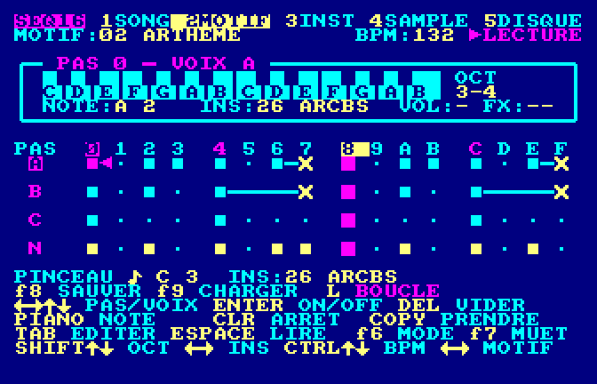
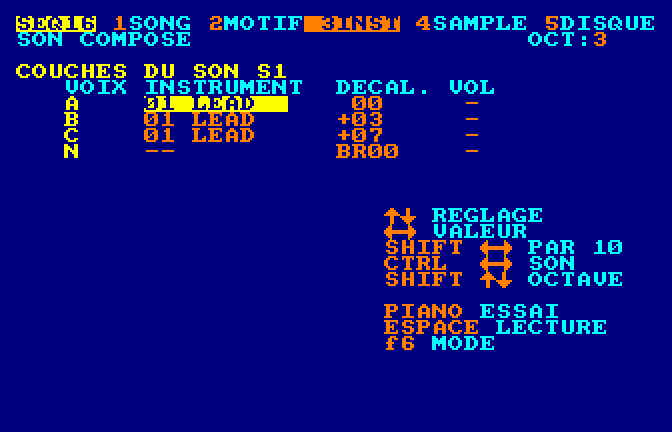
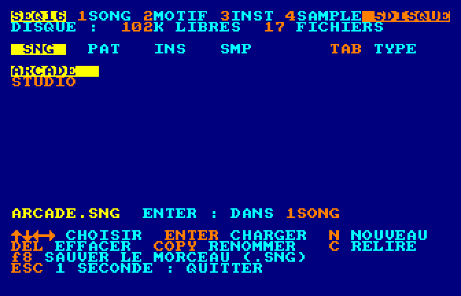

MODE D'EMPLOI
Manuel de SEQ-16
Chaque panneau et chaque touche de SEQ-16, avec les textes exactement tels que la disquette française (seq16-fr.dsk) les affiche.
Les textes en jaune, comme BOUCLE, sont ceux de l'écran du CPC. Les touches sont dessinées comme des touches de clavier : CTRL + ←/→ veut dire : maintiens CTRL et appuie sur la flèche gauche ou droite.
Démarrer et quitter
- Insère
seq16-fr.dskdans le lecteur (ou dans un émulateur réglé en CPC 6128). - Tape
RUN"SEQ16puis RETURN. L'écran de chargement s'affiche, puis le programme démarre sur le panneau MOTIF avec SYNTH, la song synthwave d'usine (aussi en fichier SYNTH.SNG sur la disquette). - Choisis un panneau avec les touches de fonction du pavé numérique : 1SONG 2MOTIF 3INST 4SAMPLE 5DISQUE. Dans chaque panneau, f8 sauve et f9 charge.
Pour quitter, maintiens ESC une seconde. Un simple appui ne suffit pas, pour ne pas perdre son travail par erreur.
Les sons par défaut restent dans le programme : au démarrage et après un nouveau morceau, on retrouve toujours les mêmes 32 instruments. Les instruments 25 à 28 (USER1 à USER4) sont libres ; 29 à 32 sont les digidrums d'usine (DGKICK, DGSNAR, DGHAT, DGCLAP).
Pour découvrir le programme, la disquette de démonstration contient deux morceaux complets : ARCADE (sans sample, son composé, les 7 effets) et STUDIO (batterie en samples et voix). Panneau f1, f9, choisis le morceau, puis ESPACE.
f1 · SONG, le morceau
Un morceau enchaîne jusqu'à 64 positions. Chaque ligne donne la position, le motif et son nom, les répétitions (REP, 1 à 16), la transposition (TR., −12 à +12 demi-tons, sauf le bruit) et un aperçu des pas. Le repère ► suit la position jouée, ↑ marque le départ de la boucle ; la ligne -- FIN : RETOUR EN ferme la liste.
En bas, MIXAGE règle le volume de chaque voix (sauvé avec le morceau) et DUREE donne la longueur du morceau. Sur le panneau MOTIF, le morceau n'avance pas : le motif affiché boucle ; au retour dans SONG, le morceau reprend.

| Touches | À l'écran | Effet |
|---|---|---|
| ↑/↓ | POSITION | choisir une position (sous la ligne FIN : le mixage) |
| ←/→ | CHAMP | choisir un champ : motif, répétitions, transposition (dans le mixage : la voix) |
| SHIFT + ↑/↓ | VALEUR | changer la valeur (dans le mixage : le volume de la voix) |
| ENTER | INSERER | insérer une position |
| DEL | OTER | ôter la position |
| COPY | DOUBLER | doubler la position |
| B | BOUCLE | la boucle part d'ici ; sur la position de la boucle, B la retire : la lecture s'arrête alors à la fin du morceau |
| ESPACE | LIRE | lire le morceau depuis le curseur / arrêter |
| f8 / f9 | DISQUE | sauver / charger un morceau .SNG |
Le nom d'un motif est celui de son fichier .PAT : il apparaît dans SONG et sur la ligne d'état du panneau MOTIF.
f2 · MOTIF, le séquenceur
En haut, la ligne d'état : le numéro et le nom du motif (MOTIF:), le tempo et l'état. Dessous, le panneau du pas : le pas et la voix du curseur, un clavier de 2 octaves, et la note, l'instrument, le volume et l'effet de la case (FX:).
La grille : les voix A, B, C et N (bruit) sur 16 pas. Une note tenue est prolongée par un trait jusqu'à son arrêt ; une voix muette s'affiche en orange. En mode son composé, une seule ligne joue un son composé sur les 4 voix, et ses couches s'affichent sous la grille.

| Touches | À l'écran | Effet |
|---|---|---|
| ←/→ ↑/↓ | PAS/VOIX | déplacer le curseur ; on entend la note sur laquelle on arrive |
| Touches du piano | NOTE | poser une note avec l'instrument du pinceau, l'entendre, passer au pas suivant |
| ENTER | ON/OFF | allumer la case avec le pinceau, ou l'éteindre |
| DEL | VIDER | vider la case |
| CLR | ARRET | arrêt de note |
| COPY | PRENDRE | la case devient le pinceau (note et instrument) |
| TAB | EDITER | éditer le panneau du pas : ←/→ choisit NOTE, INS, VOL puis les deux chiffres du FX, ↑/↓ change la valeur |
| CAPS LOCK | VERROU | verrouiller l'instrument du pinceau |
| ESPACE | LIRE | lecture / arrêt |
| L | BOUCLE / 1 FOIS | le motif se répète, ou n'est joué qu'une fois |
| f6 | MODE | voix séparées / son composé |
| f7 | MUET | rendre muette (ou audible) la voix du curseur |
| SHIFT + ↑/↓ | OCT | octave de saisie |
| SHIFT + ←/→ | INS | instrument du pinceau (et de la note sous le curseur) |
| CTRL + ↑/↓ | BPM | tempo en BPM |
| CTRL + ←/→ | MOTIF | motif précédent / suivant (32 motifs) ; la musique continue |
| f8 / f9 | SAUVER CHARGER | sauver / charger le motif affiché (.PAT) |


f3 · INST, instruments et sons composés
Le numéro et le nom de l'instrument (INSTRUMENT :), l'octave d'essai, la liste des réglages à gauche et le dessin de l'ENVELOPPE à droite, mis à jour à chaque changement d'attaque, de déclin, de tenue ou de relâche. Changer d'instrument ne réécrit que les valeurs qui changent.

| Touches | À l'écran | Effet |
|---|---|---|
| ↑/↓ | REGLAGE | choisir un réglage |
| ←/→ | VALEUR | changer sa valeur |
| SHIFT + ←/→ | PAR 10 | changer la valeur par 10 |
| CTRL + ←/→ | INSTR. | instrument précédent / suivant (32 instruments) |
| SHIFT + ↑/↓ | OCTAVE | octave d'essai |
| Touches du piano | ESSAI | essayer l'instrument |
| ESPACE | LECTURE | écouter le motif avec le son modifié |
| f6 | MODE | passer aux sons composés |
| COPY | COPIER | copier l'instrument (réglages et nom) |
| P | COLLER | coller : l'instrument copié remplace l'instrument affiché |
| O | SON BANQUE | prendre un son dans une banque .INS : la banque, puis l'un de ses 32 sons |
| f8 / f9 | sauver / charger une banque d'instruments .INS |
Les réglages
| Réglage | Valeurs |
|---|---|
| ATTAQUE | 0 – 255 |
| DECLIN | 0 – 255 |
| TENUE | 0 – 15 |
| RELACHE | 0 – 255 |
| VOLUME | 0 – 15 |
| TON | OUI / NON |
| BRUIT | OUI / NON |
| PERIODE | 0 – 31 |
| ENV. MATERIELLE | OUI / NON |
| FORME | 8 – 15 |
| DIVISION | 0 – 7 |
| ARPEGE NOTE 2 | 0 – 24 |
| ARPEGE NOTE 3 | 0 – 24 |
| VITESSE | 1 – 15 |
| VIBRATO PROF. | 0 – 6 |
| GLISSANDO | valeur signée (+008) |
| PORTAMENTO | OUI / NON |
| DIGIDRUM | OUI / NON |
Le réglage DIGIDRUM (le dernier) : à OUI, l'instrument joue un sample au lieu d'une note ; la ligne PERIODE devient SAMPLE suivie du nom du sample. Voir Digidrums.
Les sons composés (f6)
Un son composé joue jusqu'à 4 instruments à la fois, un par voix, à partir d'une seule note. COUCHES DU SON S affiche ses 4 voix : l'instrument (-- : voix inutilisée, ou 01 à 32), le décalage (−24 à +24 demi-tons ; pour la voix N, la période du bruit BR00 à BR1F) et le volume (- : celui de l'instrument, ou 0 à 15).
Le même tableau s'affiche sous la grille du panneau MOTIF en mode son composé.

| Touches | À l'écran | Effet |
|---|---|---|
| ↑/↓ | REGLAGE | choisir un champ : pour chaque voix, l'instrument, le décalage, le volume |
| ←/→ | VALEUR | changer sa valeur (avec SHIFT : par 10) |
| CTRL + ←/→ | SON | son composé précédent / suivant (S1 à S8) |
| Touches du piano | ESSAI | essayer le son composé |
f4 · SAMPLE

La banque de samples à gauche (BANQUE :, MEMOIRE:), les REGLAGES du sample choisi à droite. La première fois que l'on ouvre SAMPLE, la banque DRUMS.SMP se charge toute seule. Ici, la banque du morceau STUDIO, avec la voix SEQ16.
| Touches | À l'écran | Effet |
|---|---|---|
| ESPACE | ECOUTER | écouter le sample choisi (encore : arrêt) |
| Touches du piano | HAUTEUR | le sample plus aigu ou plus grave (±12 demi-tons) |
| ↑/↓ | REGLAGE | choisir un réglage : fréquence, décimation, bits, courbe |
| ←/→ | VALEUR | changer sa valeur (avec SHIFT : la fréquence par 10) |
| CTRL + ←/→ | SAMPLE | sample précédent / suivant |
| O | f8 SAUVER f9 CHARGER O PRENDRE 1 SAMPLE | prendre un sample dans une autre banque (16 samples et 16 Ko au plus) |
| f8 / f9 | sauver la banque (réglages et samples ajoutés compris) / charger une autre banque .SMP |
| COURBE | Effet |
|---|---|
| LOG | le rendu fidèle |
| LINEAIRE | plus creux et distordu |
| SATUREE | le signal ×2,5, écrêté |
| REPLIEE | le signal ×2,5, replié |
| INVERSEE | la forme d'onde retournée |
Pendant une écoute, l'écran ne répond plus : le processeur ne fait que jouer le sample, interruptions coupées.
f5 · DISQUE, le catalogue
Le catalogue de la disquette, par type de fichier : morceaux, motifs, instruments, samples. En haut, la place libre et le nombre de fichiers ; sous la liste, le fichier choisi et le panneau où ENTER le charge.
Sauver avec f8 (dans n'importe quel panneau) : tape le nom (8 lettres ou chiffres au plus) sur la ligne des messages, puis RETURN ; ESC annule. Si le fichier existe déjà, un second RETURN le remplace.

| Touches | À l'écran | Effet |
|---|---|---|
| ←/→ ↑/↓ | CHOISIR | choisir un fichier |
| TAB | TYPE | type suivant : SNG, PAT, INS, SMP |
| ENTER | CHARGER | charger le fichier dans son panneau, qui s'affiche |
| DEL | EFFACER | effacer le fichier (deux fois) |
| COPY | RENOMMER | renommer le fichier |
| N | NOUVEAU | nouveau morceau (deux fois) |
| C | RELIRE | relire la disquette (après en avoir changé) |
| ESPACE | écouter le motif | |
| f8 | SAUVER LE MORCEAU (.SNG) | sauver le morceau |
Les effets des pas (FX)
Chaque case d'un motif peut porter un effet, noté en hexadécimal : le premier chiffre choisit l'effet, le second sa force x (0 à F) ; -- : aucun effet.
| FX | Effet | Ce qui se passe | Exemple |
|---|---|---|---|
1x | MONTE | la note glisse vers l'aigu | 14 |
2x | DESCEND | la note glisse vers le grave | 2C |
3x | ARPEGE | la note, puis la note + x demi-tons | 37 |
4x | REPETE | la note est rejouée toutes les x images (1/50 s) | 43 |
5x | COUPE | la note est relâchée après x images | 52 |
6x | RETARD | la note part x images après le pas | 62 |
7x | VIBRATO | vibrato de profondeur x | 73 |
- Sur le panneau MOTIF, mets le curseur sur la case, puis TAB.
- Va sur le FX avec → (le chiffre de l'effet, puis celui de la force) et change-le avec ↑/↓ : le nom de l'effet s'affiche sur la ligne des messages.

En son composé, l'effet vaut pour toutes les voix du son ; REPETE, COUPE et RETARD marchent aussi sur la voix de bruit. COUPE sur un digidrum raccourcit le sample (52 sur un KICK : 40 ms au lieu de 148), ce qui fait perdre moins de pas à la musique. Le morceau ARCADE de la disquette de démonstration utilise les 7 effets.
Fichiers et messages
| Fichier | Contenu | Panneau |
|---|---|---|
.SNG | tout le morceau : 32 motifs et leurs noms, 32 instruments, 8 sons composés, mixage, enchaînement, et la banque de samples utilisée | SONG, DISQUE |
.PAT | un motif seul : mode, tempo, 16 pas | MOTIF |
.INS | 32 instruments, leurs noms et les 8 sons composés | INST |
.SMP | une banque de samples (16 au plus, 16 Ko au plus) et leurs réglages | SAMPLE |
Un .SNG emporte sa banque de samples : on peut le copier sur une autre disquette sans rien oublier. Les morceaux des anciens formats se chargent toujours ; si un fichier du même nom existe, AMSDOS garde l'ancien sous l'extension .BAK.
Les messages
| Message | Signification |
|---|---|
| MORCEAU ET BANQUE DE SAMPLES CHARGES | le morceau et sa banque de samples sont chargés |
| ERREUR DISQUE (DISQUETTE ? NOM ?) | pas de disquette, ou pas de fichier de ce nom ; suivi du code d'erreur d'AMSDOS et du nombre d'octets lus |
| CE FICHIER N'EST PAS UN MORCEAU SEQ-16 | le fichier n'est pas un .SNG de SEQ-16 |
| N A NOUVEAU : TOUT EFFACER ? | appuie encore sur N pour commencer un nouveau morceau |
| DEL A NOUVEAU : EFFACER CE FICHIER | appuie encore sur DEL pour effacer le fichier |
| FLECHES PUIS RETURN (ESC : ANNULER) | une liste de fichiers est ouverte |
| AUCUN FICHIER DE CE TYPE SUR LA DISQUETTE | aucun fichier du bon type sur la disquette |
| BANQUE TROP GRANDE POUR LA MEMOIRE | la banque .SMP ne tient pas en mémoire |
| LA BANQUE A DEJA 16 SAMPLES | touche O de SAMPLE : la banque est pleine |
| PAS ASSEZ DE MEMOIRE POUR LES SAMPLES | les samples et les digidrums sont désactivés ; le reste fonctionne |
Les banques de sons
La disquette contient 13 banques d'instruments .INS (416 sons : batterie, basses, leads, nappes, arpèges, effets, buzzer, claviers, chiptune, percussions, glissés, bruits, et USINE, les instruments par défaut) et 8 banques de samples .SMP (DRUMS, VOIX, BATTERI2, PERCUS, EFFETS, BASSES, NOTES, MOTS ; la 9e, CHIFFRES, est sur seq16-samples.dsk).
- Instruments : panneau INST, f9 charge une banque entière, O prend un seul son, f8 sauve ses instruments.
- Samples : panneau SAMPLE, f9 charge une banque, O prend un seul sample, f8 sauve la banque.
Tous les sons sont synthétisés ou dits par espeak : aucun échantillon venu d'Internet. Le détail de chaque banque est dans le README.
Les samples, pas à pas
Le CPC n'a pas de convertisseur numérique-analogique : il joue un sample en changeant très vite le volume d'une voie de l'AY, sur 16 niveaux. C'est ce qui donne le grain, et la dégradation est recherchée.
- Ouvrir le sampler : f4. La première fois,
DRUMS.SMPse charge toute seule. - Écouter : CTRL + ←/→ choisit un sample, ESPACE le joue ; les touches du piano le jouent plus aigu ou plus grave.
- Salir le son : ↑/↓ choisit un réglage, ←/→ change sa valeur ; réécoute après chaque changement.
- Changer de banque : f9, flèches, RETURN.
- Ajouter un sample d'une autre banque : O, la banque, puis le sample.
- Sauver la banque, avec ses réglages : f8.
- Fabriquer ses propres sons sur le PC à partir de WAV, avec l'onglet SAMPLES SEQ-16 de CPC DISK ou
tools/wav2smp.py.
Une banque fait 16 Ko au plus (environ 4 secondes à 8 kHz) et contient 16 sons au plus.
Les digidrums : des samples dans le morceau
Un digidrum est un instrument qui joue un sample de la banque chargée au lieu d'une note. Les instruments d'usine 29 à 32 jouent les 4 sons de DRUMS.SMP.
- Panneau INST : mets DIGIDRUM à OUI.
- La ligne PERIODE devient SAMPLE : choisis le numéro du sample (0 = le premier).
- Le VOLUME règle sa force. Pose-le comme une note : le DO de l'octave 4 le joue à sa hauteur d'origine, ±12 demi-tons.
La voix choisit la voie de l'AY (sur la voix N : la voie C) ; une voix muette ne joue pas ses digidrums.
Un sample prend tout le processeur. Pendant qu'il joue, l'écran ne répond plus, le séquenceur s'arrête et les autres voix sont gelées ; ensuite, le tempo est rattrapé. Avec des sons courts (moins de 150 ms) cela ne s'entend presque pas ; un sample long coupe les autres sons le temps qu'il joue. Changer de sample (ou de hauteur, ou de volume) demande aussi de préparer ses tables, jusqu'à environ 300 ms.
Limites connues
- Un CPC 6128 est nécessaire : les motifs sont rangés dans la mémoire supplémentaire.
- Les banques de samples tiennent dans 16 064 octets (environ 4 secondes à 8 kHz), 16 samples au plus.
- La liste des fichiers ne fonctionne que sur le lecteur A.
- Le firmware écrit lentement (environ 3,5 ms par caractère) : un écran complet met plus d'une seconde à se dessiner, mais la musique continue à l'heure pendant ce temps.
- Un « toc » au début ou à la fin d'un sample est possible.
Pas encore là
- renommer les instruments ;
- le copier-coller de blocs de pas ;
- samples : tables gardées dans la mémoire supplémentaire, mode HACHÉ, finitions du panneau SAMPLE.
Les notes techniques complètes sont dans le README du dépôt.